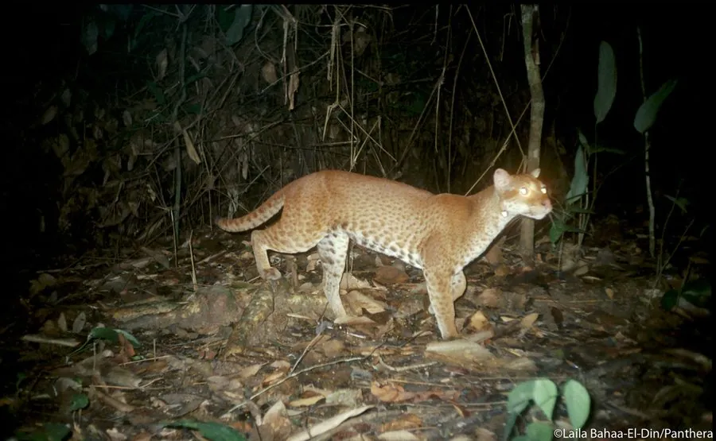

哺乳动物 · 动物界
非洲金猫 Caracal aurata

非洲热带雨林中的中型猫类，毛色有金红与灰黑两种色型，行踪隐秘，多在夜间的密林深处伏击小型兽类。
- 分类
- 门脊索动物门纲哺乳纲目食肉目科猫科属狞猫属
- 栖息环境
- 低地热带雨林、山地森林与河岸密林
- 地理分布
- 西非至中非的热带雨林带，包括塞内加尔、加纳、尼日利亚、喀麦隆、刚果与乌干达
- 保护级别
- IUCN 易危（VU）；CITES 附录Ⅱ
物种志
非洲金猫体长 66–94 cm，尾长 20–35 cm，体重约 5–16 kg。毛色有两种主要色型，一为鲜艳的金红至橙黄色，一为灰褐至黑色，腹部和面部常有浅色斑纹，耳圆、眼大，四肢相对短粗，尾较长。
它们分布于西非和中非的热带雨林，从塞内加尔到肯尼亚西部、乌干达和安哥拉北部都有记录，多在夜间单独活动，行踪十分隐秘。食物包括啮齿类、松鼠、小型羚羊、灵长类、鸟类和爬行类，常在林下伏击。每胎 1–2 仔，妊娠期约 75 天。森林砍伐、猎套和丛林肉贸易使其种群下降，被列为易危物种。
形态与习性
- 食性啮齿类、松鼠、小型羚羊、灵长类与鸟类
- 体长66–94 cm，尾长 20–35 cm
- 体重约 5–16 kg
- 繁殖妊娠期约 75 天，每胎 1–2 仔
- 活动节律夜行性，独居，行踪隐秘
- 特点有金红色与灰黑色两种色型
趣味知识
- 非洲金猫有金红和灰黑两种明显色型，同一地区常能同时见到。
- 它曾被归入独立的金猫属，分子研究后改置于狞猫属。
- 非洲金猫极难在野外观察到，许多分布记录来自自动相机。